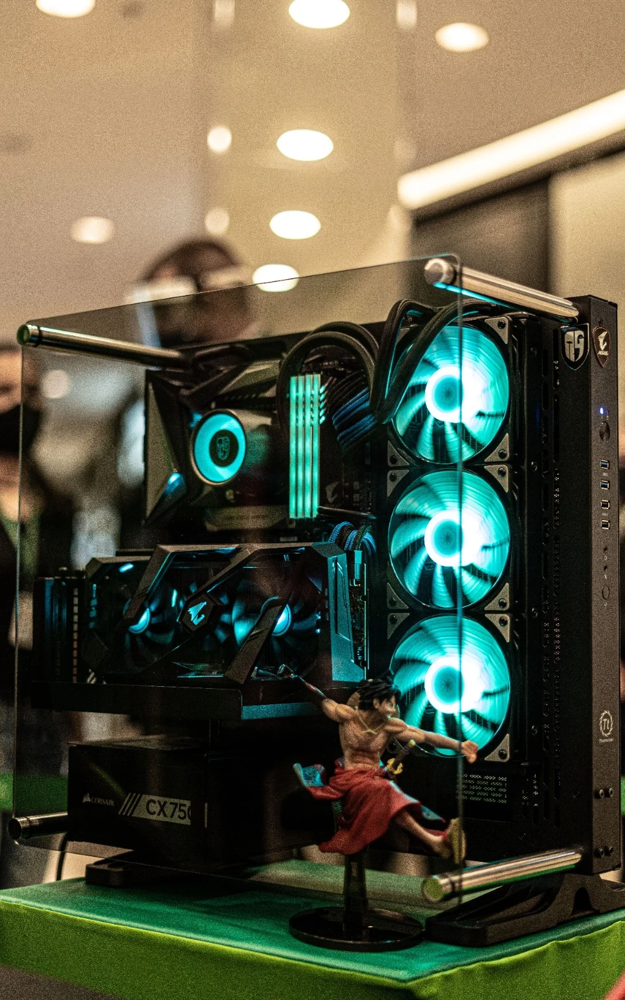

OBS & Streamlabs
Scenes, sources, capture methods, canvas/output choices, profiles and a workflow that makes sense.
VOLTTECH SERVICE / CREATOR TECH · SOUTH AFRICA
Specialist remote support for OBS and Streamlabs, encoder overload, dropped frames, blurry output, audio routing, capture cards, dual-PC workflows and creator-PC performance. Start with the symptom; VoltTech tunes the whole stream path instead of changing random presets.
REMOTE SUPPORT · SOUTH AFRICA

START WITH THE PROBLEM
Settings depend on the game, hardware, connection and platform. The useful first step is identifying whether the bottleneck is encoding, rendering, network, audio or system headroom.
Scenes, sources, capture methods, canvas/output choices, profiles and a workflow that makes sense.
NVENC, AMF, Quick Sync and x264 tuning for the quality your hardware can actually sustain.
Bitrate, connection stability and upload-path troubleshooting when the stream cannot hold clean delivery.
Mic levels, filters, compression, limiting, monitoring, application routing and source balance.
Game-versus-stream resource contention, GPU headroom, thermals, frame pacing and background load.
Capture chains, passthrough, recording workflows and dual-PC streaming setups without unnecessary complexity.
NOT SURE WHICH ONE?
Answer only the questions relevant to your symptom and get a practical starting route. It does not inspect OBS, your account or your PC remotely.
SIMPLE STARTING POINTS
These are service starting points, not a promise that every problem needs the most expensive option.
Complex dual-PC or capture-card builds can require a broader Creator System Tune and are quoted after assessment.
HOW REMOTE SUPPORT WORKS
Send the platform, output target and what happens when you go live.
Work out whether OBS, encoding, rendering, network, audio or system headroom is the limiting factor.
Tune the relevant settings and verify the result instead of stacking random presets.
Leave the creator with a configuration they can understand and reproduce.
QUICK ANSWERS
No. Streaming and creator technical support is designed to work remotely across South Africa.
No. Final quality depends on hardware, game load, internet stability and platform limits. The goal is the best stable configuration the setup can realistically sustain.
No. Never send passwords, 2FA codes or stream keys. Legitimate technical support does not require those credentials.
NEXT STEP
If you are not sure what you need, send a short description of what happens when you go live—or run Stream Scan first.
Prefer to narrow it down first? Try Stream Scan →